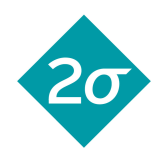

Sponsors
2019 Sponsors
Thanks to our sponsors, the Artemis Project at Brown has remained completely free of cost to its participants since its founding in 1996. Opportunities exist to sponsor a coordinator with a fellowship or to provide other forms of support for the project. Our sponsors help keep this outreach effort running and impact the coordinators and participants alike.
The 2019 Artemis Project would not have been possible without the generous support of Hillary Blumberg and Alex Ginsburg.
Other contributors include:
 |
 |
||
|
Brown University Computer Science Department |
Two Sigma Investments |
Delphix |
Simulia |
How to Donate
To make an electronic donation, go to Brown Online Giving. Please donate under the "Other Current-Use Priorities" section, click "other" and type in Department of Computer Science: Artemis. Thank you for your support.
Sponsor Benefits
- The opportunity to establish relationships with some of the Brown Computer Science undergraduate women
- An invitation to promote your company on campus where the coordinators can give a short presentation on the value of this experience
- You can organize special events in collaboration with Brown's Women in Computer Science (WiCS) group
- Your company logo will appear on the Artemis website
- The opportunity to name an Artemis coordinator for you or your designee
- You will be helping support a rich tradition of outreach